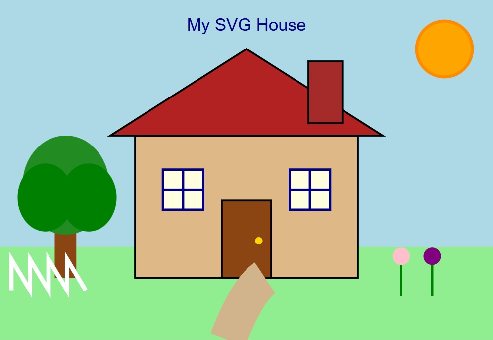
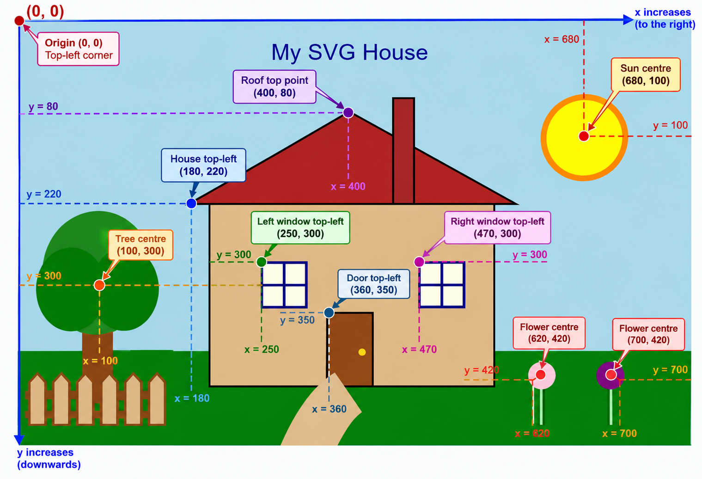
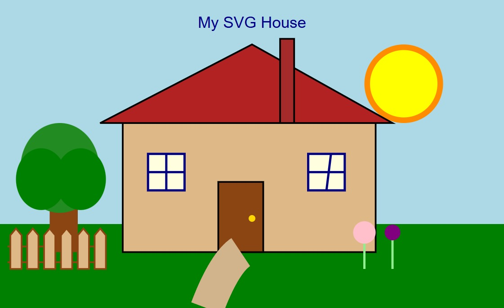

Before
Original Design

The original SVG house before additional styling and layout changes.
COS30045 Data Visualisation
This exercise demonstrates the use of different SVG shapes, coordinates, grouping and customisation to create a house and garden scene.
Step 1
The SVG below uses rectangles, circles, ellipses, lines, polygons, paths, grouped elements and text to create a simple house and garden.
Step 2
SVG coordinates begin at the top-left corner at (0,0).
The x-coordinate increases from left to right, while the y-coordinate increases from top to bottom.
Example coordinates:

Step 3
The original SVG was customised by changing colours, positions, dimensions and strokes, as well as improving elements such as the fence and garden.

The original SVG house before additional styling and layout changes.

The customised version includes updated colours, positioning, dimensions and a redesigned fence.
| SVG Element | Before | After | What I Changed |
|---|---|---|---|
| Sun | Orange sun in top-right | Yellow sun with orange border | Changed the fill colour, size and coordinates. |
| Grass | Light green | Dark green | Changed the grass rectangle fill colour. |
| Fence | White zig-zag polyline | Wooden picket fence | Replaced the basic polyline with polygon posts and horizontal rails. |
| House | Smaller house | Larger and wider house | Changed the dimensions and position. |
| Roof | Smaller roof | Wider roof | Adjusted the polygon coordinates. |
| Windows | Original positions | Repositioned windows | Changed the transform coordinates while keeping the windows grouped. |
| Garden Path | Short path | Larger curved path | Modified the path coordinates and stroke width. |
| Flowers | Small flowers | Resized and repositioned | Adjusted the circle and stem coordinates. |